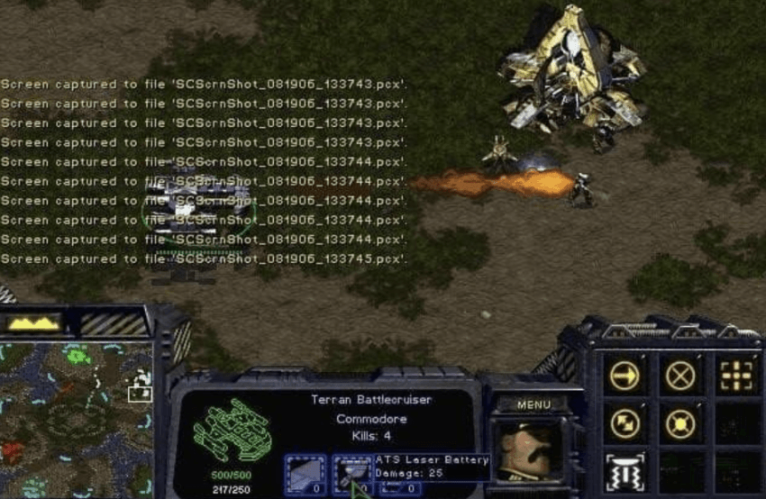
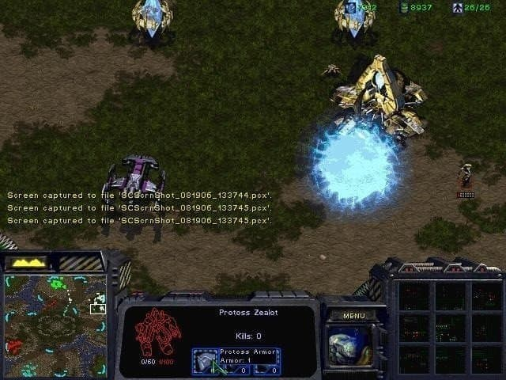

잘봐
야마토 데미지는 260의 폭발형
질럿한테 쏘면 질럿 쉴드 60은 다 날아가고 야마토는200
그리고 질럿 기본아머 1때문에 1을 빼면
야마토는 199짜리 폭발형이야
여기서 질럿은 소형이니까 데미지가 절반만 들어가면
99.5 즉 질럿은 야마토 맞고 죽지않는다는 공식이 성립한다


잘봐
야마토 데미지는 260의 폭발형
질럿한테 쏘면 질럿 쉴드 60은 다 날아가고 야마토는200
그리고 질럿 기본아머 1때문에 1을 빼면
야마토는 199짜리 폭발형이야
여기서 질럿은 소형이니까 데미지가 절반만 들어가면
99.5 즉 질럿은 야마토 맞고 죽지않는다는 공식이 성립한다
선조들이 지켜준거 아님?
질럿이랑 드라군은 뽑기만해도 이득이다
대신에 배틀은 핵한방아니잖아
질럿이 뭐에요?
이 글은 올해로 20주년이 된 스타갤 꾸준글이라고 한다.
그래서 .. 전장에서 포탄이 떨어져도 한두명이 살아남아 생존하는거지 ..
너 다니엘아
루저 왜이렇게 약함 상향좀
오 배쿠가 럿 한 방에 못죽이는게 신기하네요
저는 저그만 조금해보고 맨날 울라리 뮤라리 뽑아서 이런거 보면 신기해요